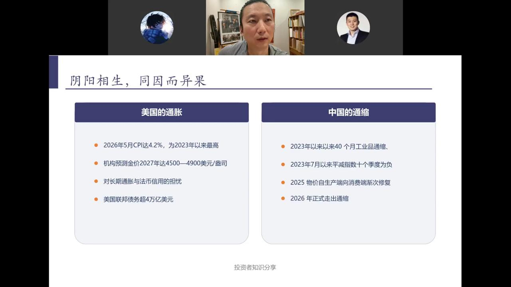
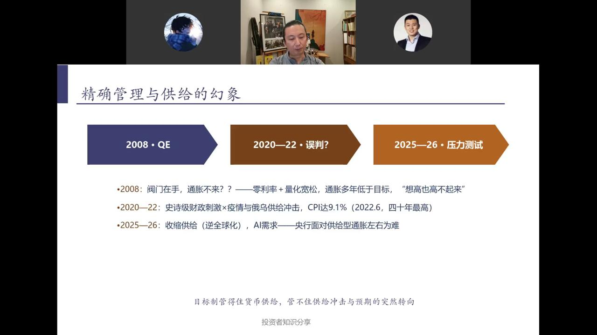
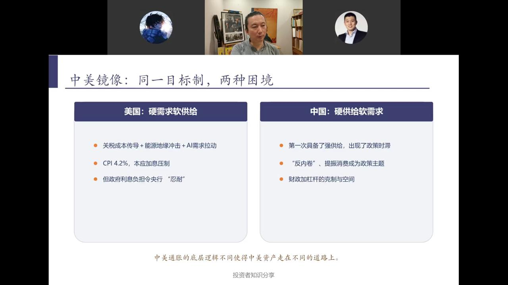

讲讲通胀——供求与货币的循环
目录
阴阳相生，同因而异果

当前全球最大的宏观图景是：美国经历40年未有的通胀，中国经历40个月工业品通缩。两者看似方向相反，根源却同一轮全球货币与供给格局的变化。
美国的通胀
- 2026年5月CPI达4.2%，为2023年以来最高
- 机构预测金价2027年达4500—4900美元/盎司
- 对长期通胀与法币信用的担忧持续升温
- 美国联邦债务超4万亿美元
中国的通缩
- 2023年以来40个月工业品通缩
- 2023年7月以来GDP平减指数十个季度为负
- 2025年物价自生产端向消费端渐次修复
- 2026年正式走出通缩
核心矛盾：中国此前的通缩环境客观上为美国压低了通胀水平。一旦中国走出通缩，美国的通胀控制难度将进一步上升。
弗里德曼的警句

"Inflation is always and everywhere a monetary phenomenon."
——米尔顿·弗里德曼
（无论时空怎么变幻，通胀始终是一种货币现象）
这句话是信用货币时代全球央行政策的基石，运行了四五十年整体效果稳定。但它有一个隐含前提：供给端长期稳定。
古代智慧：籴甚贵伤民，甚贱伤农
班固《汉书·食货志》记载，战国时魏国国相李悝提出"籴甚贵伤民，甚贱伤农。民伤则离散，农伤则国贫"。
平籴法与和籴法
在时间上熨平供给的波动，甚至为了稳定供给进行价格补贴。
均输平准
汉武帝时代为了控制商贾的势力，客观上在空间上熨平供给的波动。
桑弘羊三问与中国的政府介入传统——从两千多年前开始，中国人就知道通胀不仅是货币问题，更是供给问题。
金属货币的硬约束 vs 信用的软约束
金属货币与无锚纸币体系下，货币供给受金属储量、铸造成本或财政纪律的硬约束——通胀不是政策选择，而是制度失控的结果。
金属的硬上限
- 董卓小钱：超发五倍百姓逃亡
- 蜀汉"直百钱"：刘备超发五十倍经济稳定
- 罗马皇帝戴克里先：颁布限价敕令
- 价格革命：西班牙国王的烦恼
信用的软约束
- 中国历史：交子、会子、元钞、明宝钞
- 法币与金圆券埋葬了一个政权
- 魏玛德国：1923巅峰之作
- 人民胜利折实公债和地产抵押马克
信用货币——1971年的分水岭
1944—71年金汇兑本位制：货币供给有外生约束。1971年尼克松关闭黄金窗口，货币发行彻底成为政策变量。
70年代的政策探索
- 无锚时代撞上了"石油冲击"
- 保罗·沃尔克：信用货币是可以用通胀目标来管理的
- 1990年新西兰首创通胀目标制
"大缓和"：目标制的高光时刻
- 泰勒规则+预期管理：通胀长期钉在2%上下
- 伯南克：成功的量化宽松
- 弗里德曼的理论大行于世界
通胀第一次"理论上"可以被精确设定——但理论上 ≠ 现实中。
精确管理与供给的幻象

2008·QE：阀门在手，通胀不来？
零利率+量化宽松，通胀多年低于目标，"想高也高不起来"。
2020—22·误判？
史诗级财政刺激×疫情与俄乌供给冲击，CPI达9.1%（2022.6，四十年最高）。
2025—26·压力测试
收缩供给（逆全球化），AI需求——央行面对供给型通胀左右为难。
目标制管得住货币供给，管不住供给冲击与预期的突然转向。
中美镜像：同一目标制，两种困境

美国：硬需求软供给
- 关税成本传导+能源地缘冲击+AI需求拉动
- CPI 4.2%，本应加息压制
- 但政府利息负担令央行"忍耐"
中国：硬供给软需求
- 第一次具备了强供给，出现了政策时滞
- "反内卷"、提振消费成为政策主题
- 财政加杠杆的克制与空间
中美通胀的底层逻辑不同，使得中美资产走在不同的道路上。
历史螺旋：变化的财政和不变的供求
金属的时代
信用货币之前，通胀更多是财政问题，最终用信用重来解决。
信用的时代
信用货币之后，当财政诉求被规范，通胀成为可精确管控的政策目标。
侵蚀的时代
当下，财政主导的回归正在侵蚀央行的信用。贯穿时代的隐性力量——供给约束从未消失。
货币松紧是通胀的肉体，供求失衡是通胀的灵魂。日本消耗外汇储备干预汇率不可持续，最终大概率走向汇率、通胀双失控——这是货币信用侵蚀时代的典型终点案例。